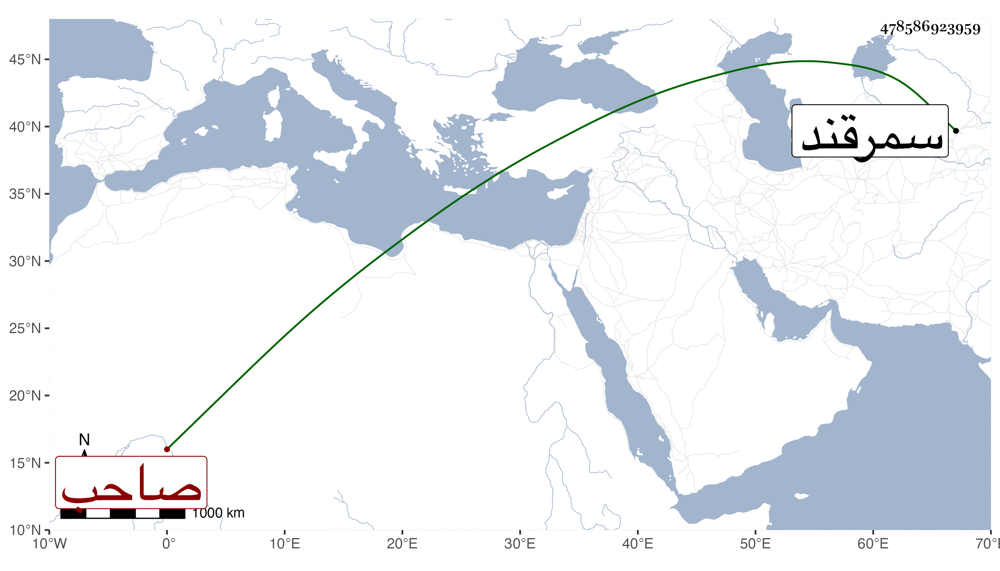

0902Sakhawi.DawLamic.ITO20230111-ara1.EIS1600.478586923959
Biography ID: 478586923959
671
محمد بن شاه رخ بن تمرلنك ويعرف بألوغ بك صاحب سمرقند من قبل أبيه . قتله ولده عبد اللطيف في سنة أربع وخمسين واستقر عوضه فلم يلبث سوى شهر وقتله عمه هميان بن شاه رخ وكان من نمط أبيه مع حذق وفهم ويحكى أنه لم يكن أحد يجدد في سمرقند بناء يذكر إلا كتب عليه اسمه وأن محمد بن شهاب الخافي الآتي قريبا بني في سوق البراذعيين منها مدرسة فاجتاز بها صاحب الترجمة ومعه نديم له اسمه عبد المؤمن من أهل العلم حلو النادرة سريع الجواب فأعجبه فسأله عن صاحبها فسماه له قال فما اسمها فقال له مدرسة تكون في البراذعيين لا يصلح أن تسمى إلا بالحمارية فشاع هذا الكلام بحيث اشتهرت المدرسة بذلك وكان ذلك سببا لتحامي الطلبة عن النزول بها ولو مات الواحد منهم جوعا مع كثرة معاليمها .
